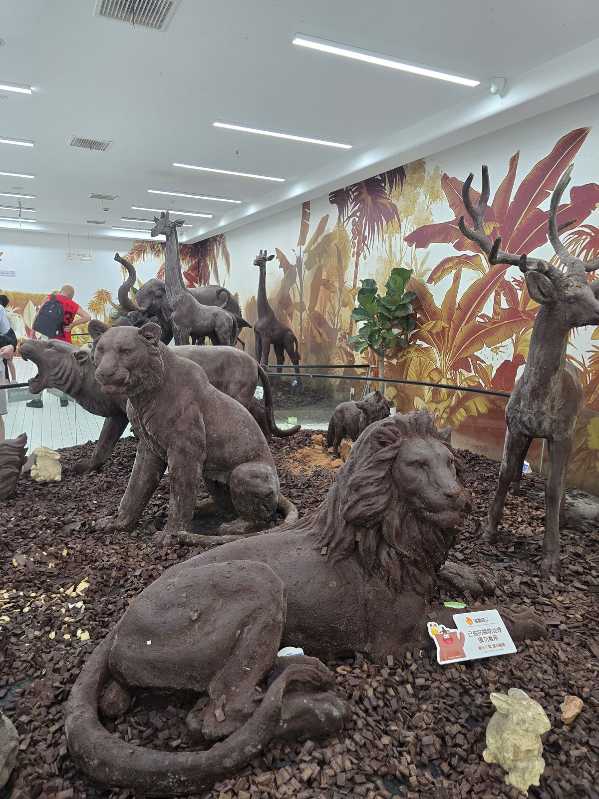
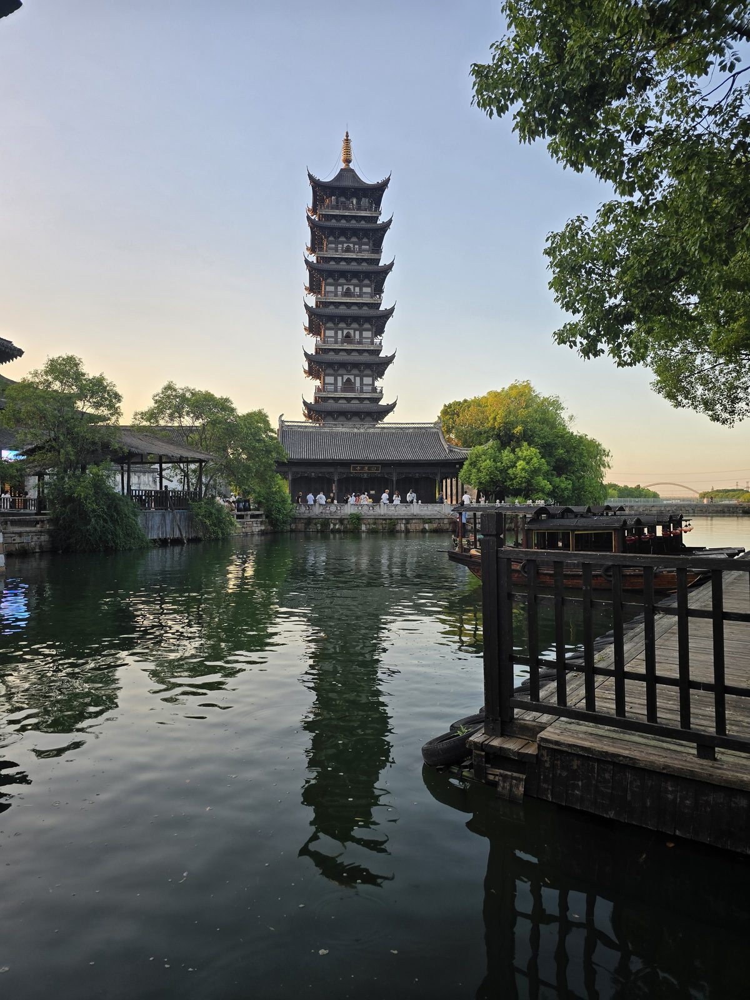
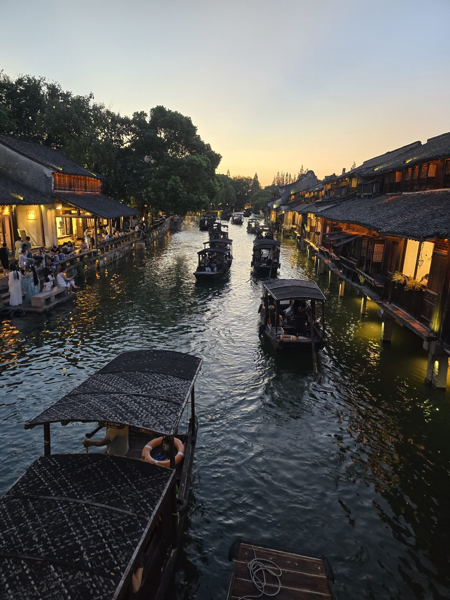
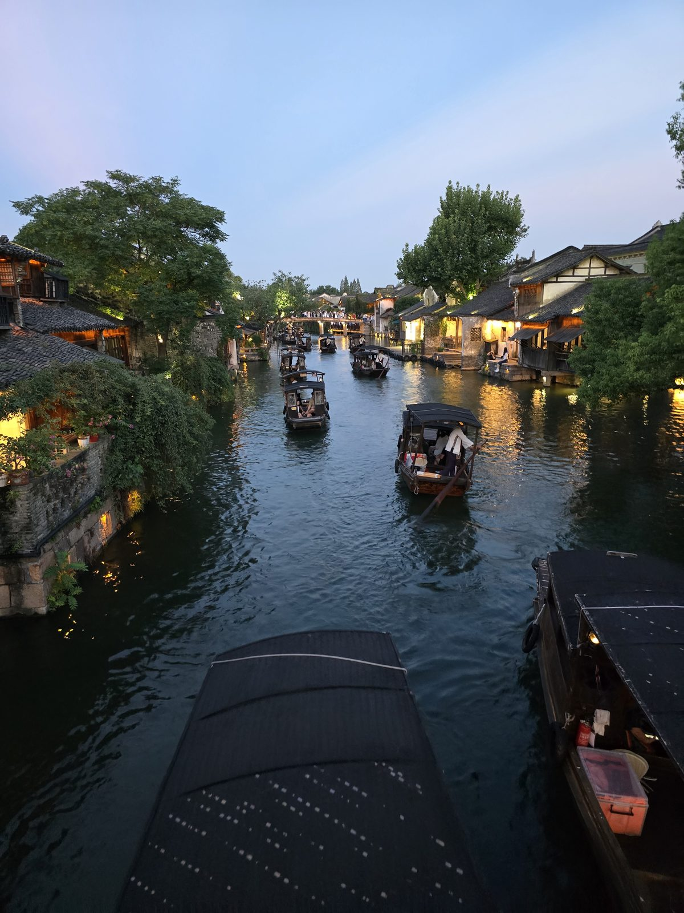
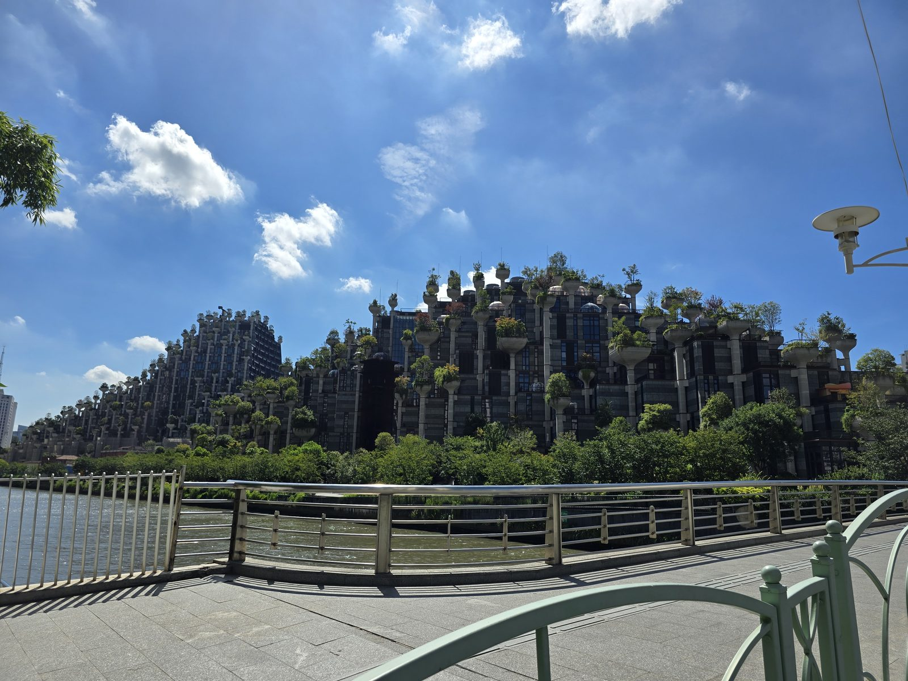
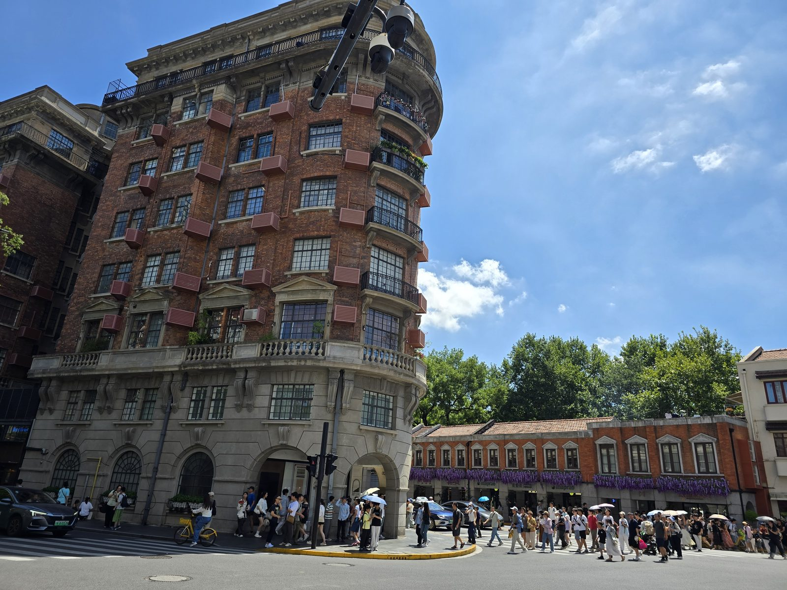
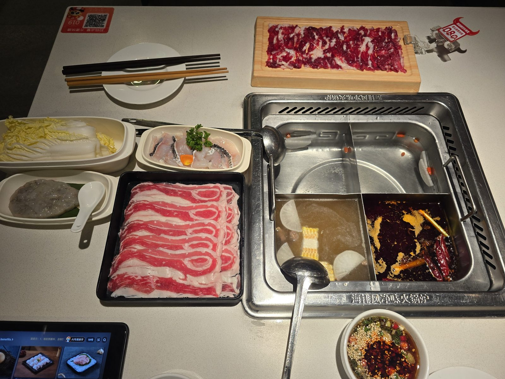
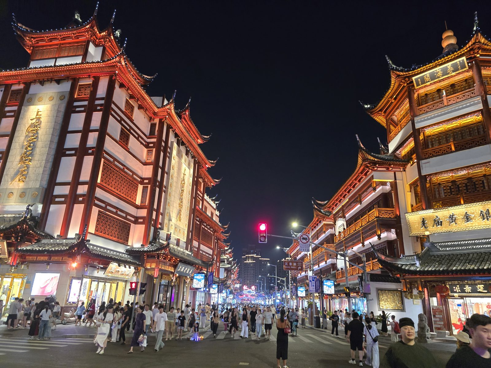
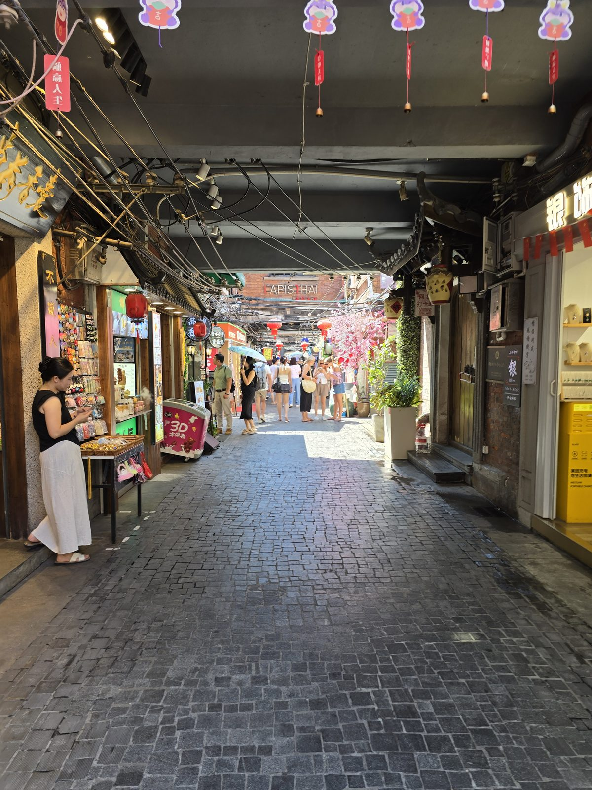
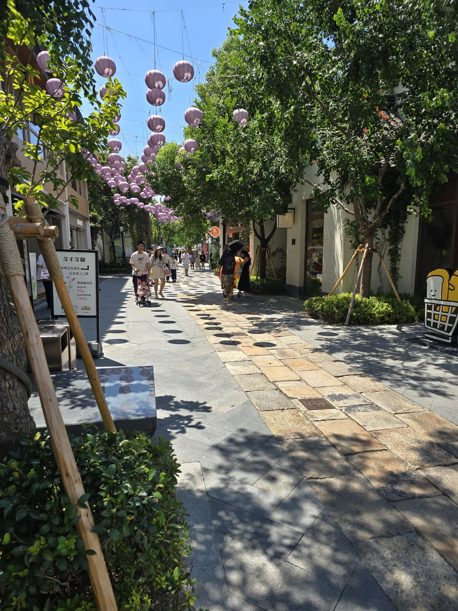

China · 2025
상하이와 우전, 사흘 — 물 위에 불이 켜지던 저녁
초콜릿으로 빚은 사자에서 시작해, 해질 무렵의 백련탑을 지나, 예원의 밤까지. 2025년 8월의 사흘을 사진 순서 그대로 적었습니다.
여행 기록을 미루면 남는 건 사진뿐입니다. 다행히 사진에는 찍힌 시각이 같이 저장돼 있어서, 사흘을 시간 순서대로 되짚을 수 있었습니다. 아침 열 시 사십칠 분, 저녁 여섯 시 이십 분, 밤 아홉 시 삼십삼 분 — 그날 어디에 서 있었는지가 분 단위로 남아 있더군요. 이 글은 그 순서를 그대로 따라갑니다.
첫째 날 — 먹지 마시오

사흘의 시작은 뜻밖에도 초콜릿이었습니다. 사자와 호랑이가 웅크리고, 그 뒤로 기린과 코끼리가 서 있고, 오른쪽에는 뿔이 큼직한 사슴이 있습니다. 바닥에는 나무 조각을 깔았고 벽에는 열대 식물을 그린 벽화가 이어집니다. 얼핏 자연사박물관의 디오라마처럼 보이지만, 자세히 보면 표면이 이상합니다. 털이 아니라 덩어리진 갈색 반죽입니다.
사자 앞에 놓인 작은 안내판이 정체를 알려줍니다. "已做防腐防蛀處理 請勿食用" — 방부·방충 처리를 했으니 드시지 마시오. 영어로는 더 단호하게 "Not Food"라고 적혀 있습니다. 이 커다란 짐승들이 전부 초콜릿으로 빚은 조각이라는 뜻입니다. 왼쪽 벽에는 "最佳拍照点 PHOTO SPOT", 그러니까 가장 잘 나오는 촬영 위치를 친절하게 표시해 두었습니다. 바닥 구석에는 흰 토끼 조각도 몇 개 굴러다닙니다.
중국의 실내 전시는 이런 식으로 예상을 비껴갑니다. 규모는 크고 소재는 엉뚱한데, 안내판만은 지극히 실용적입니다. 먹지 말라는 문장을 굳이 두 언어로 적어둔 걸 보면, 그동안 누군가는 정말로 시도해 봤다는 이야기겠지요.
물의 마을로 — 우전 서책
오후에는 상하이를 벗어나 우전(烏鎮)으로 향했습니다. 저장성 자싱시 통샹에 있는 물의 마을로, 상하이에서 두 시간이 채 걸리지 않습니다. 우전은 동책(東柵)과 서책(西柵) 두 구역으로 나뉘는데, 하룻밤을 묵거나 야경을 볼 생각이라면 답은 서책입니다.

도착해서 처음 마주친 건 백련탑이었습니다. 층마다 처마 끝이 날카롭게 들려 있고, 꼭대기의 금빛 상륜부가 아직 남은 햇빛을 받아 혼자 밝습니다. 그런데 정작 눈이 가는 건 탑이 아니라 물에 비친 탑입니다. 바람이 거의 없어서 수면이 거울처럼 탑을 한 번 더 세워 놓았습니다. 오른쪽 아래에는 검은 차양을 씌운 나룻배들이 나무 선착장에 묶여 있습니다.
여섯 시 이십 분. 물가 마을은 이 시간부터가 진짜입니다.


삼십 분 뒤. 하늘은 아직 푸른 기가 남았는데 처마 밑에는 벌써 등이 들어왔습니다. 수로 양쪽으로 목조 가옥이 물에 발을 담근 채 늘어서 있고, 그 사이를 검은 차양의 나룻배가 지나갑니다. 사공은 서서 노를 젓고, 배에 탄 사람들은 대체로 아무 말이 없습니다. 물살이 갈라지는 소리와 노가 삐걱대는 소리가 유난히 크게 들리는 시간대입니다.
물가 난간에 앉은 사람들, 카메라를 든 사람들, 그냥 다리를 늘어뜨리고 있는 사람들. 이 마을에서 저녁의 할 일은 그게 전부입니다.

일곱 시 이십일 분. 하늘에 마지막 남색이 걸려 있고, 아래는 완전히 다른 마을이 되어 있습니다. 왼쪽 기와집 벽이 주황빛으로 물들고, 오른쪽 나무들은 아래에서 쏘는 조명을 받아 초록으로 떠 있습니다. 수면은 그 모든 색을 길게 늘여 놓습니다. 배 한 척이 한가운데를 천천히 가로지릅니다.
우전 서책은 낮에 가면 그냥 잘 정돈된 옛 마을입니다. 이 마을이 값을 하는 건 해가 넘어가고부터 두 시간 남짓입니다. 일정을 짤 때 도착 시간을 오후 늦게로 잡는 것만 지켜도 절반은 성공입니다.
둘째 날 — 강가의 나무 기둥

이튿날 아침, 강변 산책로를 걷다가 건너편에 이상한 것이 서 있었습니다. 건물인데 산처럼 층층이 쌓여 있고, 기둥 하나하나 꼭대기마다 나무가 심겨 있습니다. 상하이 쑤저우강변의 천수(千樹, 1000 Trees)입니다. 이름 그대로 천 그루를 목표로 심은 건물이고, 멀리서 보면 콘크리트 숲과 진짜 숲의 경계가 흐릿해집니다.
하늘이 유난히 맑았습니다. 8월 상하이는 대체로 습하고 뿌연데, 이날 아침은 구름이 또렷하게 보일 만큼 시야가 열려 있었습니다. 스테인리스 난간과 연둣빛 철제 정자, 그 아래로 흐르는 흙탕물 강. 산책로는 잘 닦여 있고 사람은 적었습니다.
우캉대루 — 사람이 더 많은 건축

옛 프랑스 조계지로 넘어가면 우캉대루가 있습니다. 1924년에 지어진 아파트로, 원래 이름은 노르망디 아파트. 헝가리 출신 건축가 라슬로 후덱이 설계했습니다. 도로가 예각으로 갈라지는 자리에 끼워 넣느라 건물이 뱃머리처럼 둥글게 깎여 있습니다.
재미있는 건 이 건물이 아니라 건너편 인도입니다. 사진 오른쪽을 보면 양산을 든 사람들이 줄지어 횡단보도를 건너고 있는데, 대부분 이 건물을 찍으러 온 사람들입니다. 신호가 바뀔 때마다 인파가 통째로 옮겨 다닙니다. 정작 건물 안에는 지금도 사람이 살고 있어서, 발코니마다 화분과 에어컨 실외기가 얌전히 붙어 있습니다. 관광지와 주거지가 한 건물에 겹쳐 있는 셈입니다.
맞은편 붉은 벽돌 상가에는 보라색 조화 넝쿨을 늘어뜨려 놓았습니다. 이 동네는 그런 식으로 계속 사진 찍기 좋게 손질돼 있습니다.
훠궈 — 태블릿이 먼저 말을 건다

늦은 점심은 훠궈였습니다. 냄비가 넷으로 갈려 있는데 실제로 쓴 건 두 칸입니다. 한쪽은 무와 옥수수를 넣은 맑은 육수, 다른 쪽은 말린 고추가 통째로 떠 있는 붉은 탕. 나무판에 얇게 펴 놓은 소고기, 상자에 가지런히 깐 삼겹살, 배춧잎, 생선살, 그리고 다진 새우살 완자. 앞접시 옆에는 참깨와 고수, 다진 마늘을 섞은 소스 그릇.
왼쪽 아래에 놓인 태블릿이 요즘 중국 외식의 핵심입니다. 화면에 "AI 專屬推薦"이라고 떠 있고, 메뉴 사진을 눌러 담으면 그대로 주방으로 넘어갑니다. 종업원을 부를 일이 거의 없습니다. 테이블 구석에는 결제용 QR 코드가 붙어 있고, 냄비 테두리에는 "海排風淨味火鍋爐" — 연기를 아래로 빨아들이는 무연 화로라는 표시가 새겨져 있습니다. 그래서 훠궈를 먹고 나와도 옷에 냄새가 덜 뱁니다.
주문도 결제도 화면 안에서 끝납니다. 반대로 말하면 알리페이나 위챗페이가 없으면 아무것도 못 합니다. 한국에서 미리 해외 카드를 등록해 두는 것이 이 나라에서는 준비물 1번입니다.
예원의 밤

밤 아홉 시 반의 예원 상가는 낮보다 붐빕니다. 왼쪽에 상하이 라오판뎬(上海老飯店), 오른쪽에 라오먀오 황금(老廟黃金) 간판이 걸려 있고, 그 사이로 처마가 겹겹이 이어집니다. 기와지붕 윤곽선을 따라 조명을 박아 놓아서, 건물이 밤에 오히려 선명해집니다.
횡단보도에는 신호를 기다리는 사람들이 가득하고, 저 멀리 붉은 신호등 하나가 어둠 속에 떠 있습니다. 여기는 명나라 정원인 예원 본원(별도 입장권)과 그 바깥의 상가가 다른 공간입니다. 사진에 찍힌 건 바깥쪽 상가 거리로, 입장료 없이 밤늦게까지 걸을 수 있습니다.
셋째 날 — 골목 두 개

마지막 날 오전에는 좁은 골목에 들어갔습니다. 폭이 어른 두 사람이 겨우 비켜갈 정도인데 양쪽으로 가게가 빼곡합니다. 좌판에는 기념품과 마그넷, 3D 엽서가 깔려 있고, 머리 위로는 전선과 에어컨 실외기, 붉은 장식이 어지럽게 지나갑니다. 안쪽으로 들어가면 조화 벚꽃이 매달려 있고 그 아래로 사람들이 천천히 밀려 다닙니다. 낡은 벽돌벽과 회색 돌바닥은 그대로인데 그 위에 얹힌 것들은 전부 새것입니다.

오후에 간 곳은 정반대였습니다. 길이 넓고 바닥은 커다란 화강암 판으로 깔았고, 머리 위로 연보라색 등이 수십 개 줄지어 걸려 있습니다. 가로수 그늘이 바닥에 동그란 얼룩을 만들고, 그 사이로 유모차를 끌거나 양산을 든 사람들이 지나갑니다. 오전의 골목이 켜켜이 쌓인 시간이라면, 이쪽은 처음부터 이렇게 보이도록 설계된 거리입니다.
같은 도시에서 반나절 사이에 이 둘을 다 볼 수 있다는 게 상하이의 성격을 잘 보여줍니다. 낡은 것을 지우지 않고, 그 옆에 새것을 아주 크게 지어 놓습니다.
사흘을 돌아보고 — 실전 정보
- 기간2025년 8월 15일 ~ 17일, 2박 3일
- 동선상하이 → 우전 서책(1박) → 상하이
- 날씨한여름. 낮 최고 35도 안팎에 습도가 높다
- 결제알리페이 / 위챗페이. 현금·해외카드는 거의 안 통한다
- 통신한국 통신사 국제 로밍이 가장 속 편하다
1. 우전은 시간을 맞춰서 가야 한다
서책의 조명은 해가 진 뒤에 완전히 들어옵니다. 이 여행에서도 18:20의 백련탑과 19:21의 수로는 한 시간 사이에 완전히 다른 곳이었습니다. 낮에 도착해 종일 걷는 일정보다, 오후 늦게 들어가 저녁부터 밤까지 머무는 편이 훨씬 남습니다. 가능하면 서책 안에서 하룻밤 자면 관광객이 빠진 뒤의 골목을 볼 수 있습니다.
2. 결제는 한국에서 끝내고 간다
훠궈집 태블릿부터 골목 좌판까지 전부 QR입니다. 알리페이나 위챗페이에 해외 신용카드를 미리 등록해 두지 않으면 밥 먹기부터 막힙니다. 현지에 도착한 뒤에 앱을 설치하려고 하면, 정작 인증에 필요한 서비스가 열리지 않아 곤란해집니다.
3. 지도와 메신저를 미리 정리한다
구글 지도, 카카오톡, 인스타그램은 그대로 쓰기 어렵습니다. 한국 통신사의 국제 로밍을 켜면 평소처럼 열리는 경우가 많아, 현지 유심보다 로밍이 편할 때가 많습니다. 지도는 바이두나 가오더를 하나 깔아두면 택시 기사에게 목적지를 보여주기 좋습니다.
4. 8월은 더위가 일정을 지배한다
이 사흘의 사진을 보면 낮 시간대 사진이 거의 없습니다. 오전 열 시대와 저녁 여섯 시 이후에 몰려 있습니다. 한여름 상하이에서는 그게 자연스러운 리듬입니다. 정오부터 오후 세 시까지는 실내에 두는 편이 좋습니다. 박물관이나 전시, 늦은 점심 훠궈처럼요. 양산은 사치품이 아니라 필수품이고, 현지 사람들이 더 열심히 씁니다.
5. 인기 있는 곳은 사람도 풍경의 일부다
우캉대루 사진에서 건물만큼 눈에 들어오는 건 횡단보도의 인파입니다. 예원도 밤 아홉 시 반에 그 정도입니다. 사람 없는 사진을 원한다면 이른 아침밖에 답이 없습니다. 아니면 아예 사람을 넣고 찍는 편이 그날의 공기를 더 정직하게 남깁니다.
남는 것
사흘 동안 가장 오래 서 있었던 곳은 우전의 다리 위였습니다. 물 위로 배가 지나가고, 양쪽 집에 하나씩 불이 들어오고, 하늘색이 남색에서 검정으로 넘어가는 동안이었습니다. 특별한 일이 있었던 건 아닙니다. 그냥 해가 지는 걸 처음부터 끝까지 본 게 오랜만이었습니다.
혼자 다니면 일정을 설명할 사람이 없어서, 서 있고 싶은 만큼 서 있을 수 있습니다. 그게 이 여행 방식의 가장 큰 이점입니다. 대신 그날 본 것을 그날 적어두지 않으면 아무도 대신 기억해 주지 않습니다. 이 글은 사진에 남은 시각을 따라 뒤늦게 복원한 기록이고, 다음부터는 그날 밤에 세 문장이라도 적어둘 생각입니다.